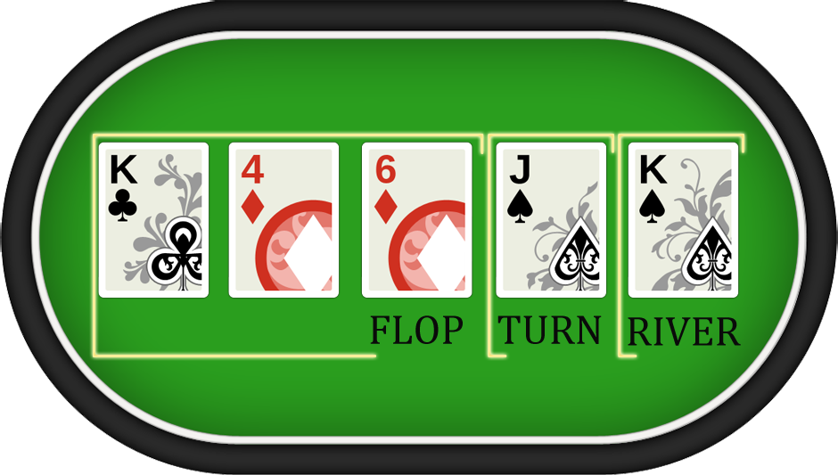
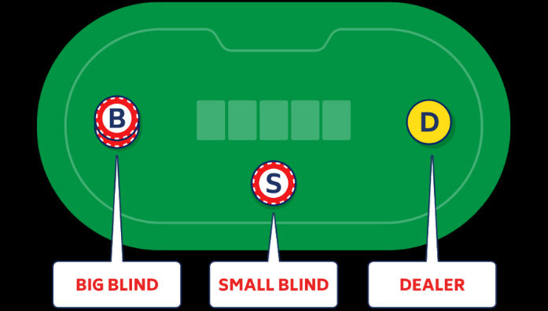
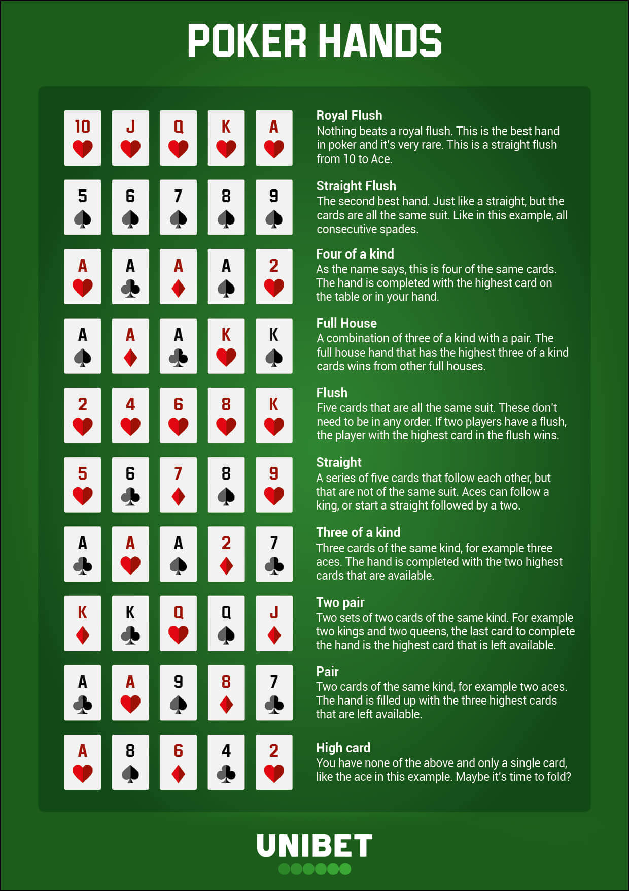

What is Texas Hold'em?
Texas Hold'em is the most popular of all poker variations. Discovering how to play Texas hold'em poker is not difficult and the simplicity of its rules, gameplay, and hand-ranking all contribute to the popularity of the game.
The number of possible situations and combinations is so vast that Texas hold'em can be an extremely complex game when you play at the highest levels.
If you are approaching the game of Texas hold'em for the first time, starting from the basic rules of the game is key. Not only these are the easiest ones to learn, but they are also essential to understand the gameplay and, later on, the game's basic strategy.
Rules of the Game
At the beginning of eveyr round, you will be dealt 2 cards, face down. These cards are called your "hole". The goal of a Texas hold'em game is to use the cards in your "hole" along with the community cards to make the best five-card poker hand on the table.
Over several betting rounds, five more cards will be dealt face up in the middle of the table. These are called your "Community" cards. Once the community cards are dealt.
It is your turn to find the best combination between "hole" and "community" cards.
If the 5 cards on the table lead to a combination better than one that involves your "hole", you can play all five community cards and disregard yours.
In this version of poker, you can use whatever combination you would like to make the best hand.
If the betting causes all but one player to fold, the final active player wins the pot. This also means that you don't have to show your "hole" to other players.
This shows that you don't need the best cards in the deck to win a game. It is possible for a player to "bluff" and make opponents fold a hand that is actually better than yours
Below shows a diagram of the "Community" cards.

If two or more players make it all of the way to the end after the last community card is dealt and all betting is complete, the only way to win the pot is to have the highest-ranking poker hand.
How to Play a Round
Steps:
- Players enter round 1 of betting.
- Betting ends, players are dealt 2 cards each face down.
- Players enter round 2 of betting.
- Betting ends, first community card is shown.
- Players enter round 3 of betting.
- Betting ends, second community card is shown.
- Players enter round 4 of betting.
- Betting ends, final community card is shown.
- Players enter final round of betting.
- Betting ends, cards are shown, and winner is revealed.
Blinds
Poker blinds are mandatory bets that are placed into the pot before any of the cards are dealt. The blinds are paid each hand by the players who are in the “small blind” and “big blind” spots at the table.
Poker blinds help prevent players from simply folding until they are dealt premium cards.

Hands
In poker, there is a multitude of hands that must be learned to better familiarize yourself with your chance of winning.
It is important to know your hand's ranking so that you can base your betting off of it.
Below shows the 10 different types of hands in a game of poker.

How Will You Master Poker?
Repetition is the best way to become a master at poker. It is important to be curious in your learning stages and try different strategies.
Every game you play will improve your skills and if you are lucky, you might get a little bit richer. Have fun playing POV poker!